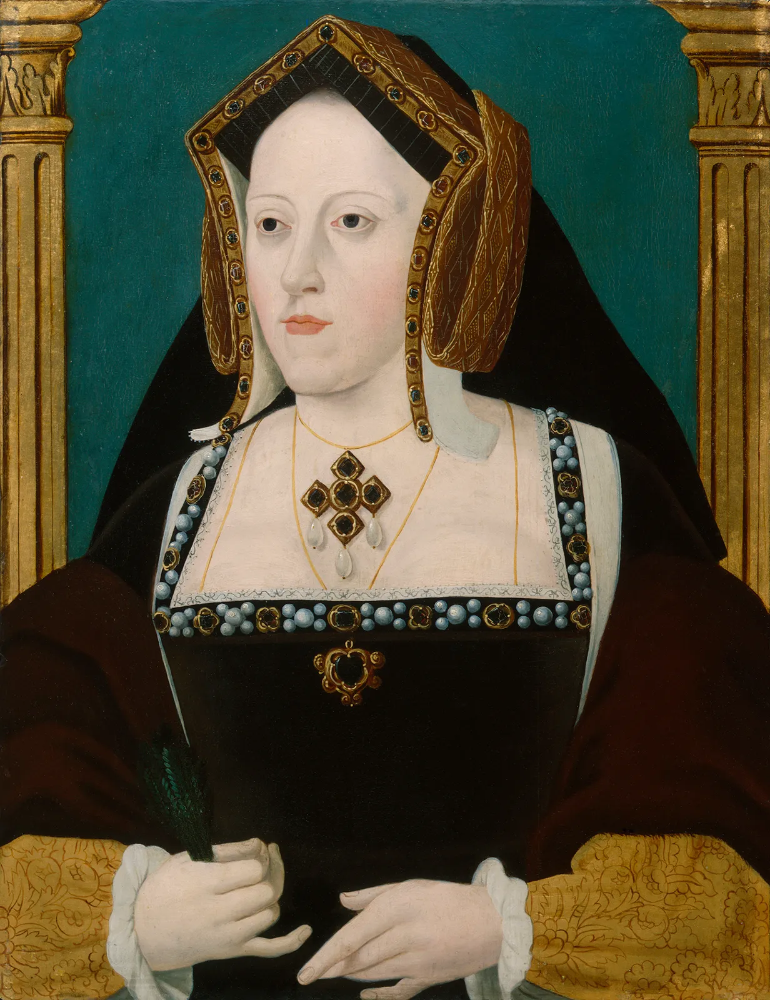

•Katherine Howard•
1523–1542

Source: wiki
By Hans Holbein the Younger, c. 1540
Catherine Howard (also spelt Katheryn Howard) was Queen of England from 1540 until 1541 as the fifth wife of King Henry VIII. She was the daughter of Lord Edmund Howard and Joyce Culpeper, a cousin to Anne Boleyn (the second wife of Henry VIII), and the niece of Thomas Howard, 3rd Duke of Norfolk. Thomas Howard was a prominent politician at Henry's court, and he secured her a place in the household of Henry's fourth wife, Anne of Cleves, where she caught the King's interest. She married him on 28 July 1540 at Oatlands Palace in Surrey, just 19 days after the annulment of his marriage to Anne. He was 49, and she was between 15 and 21 years old.
Catherine had an aristocratic ancestry as a granddaughter of Thomas Howard, 2nd Duke of Norfolk (1443 – 1524), but her father, Lord Edmund Howard, was not wealthy, being the third son of his father – under the rules of primogeniture, the eldest son inherited all of the father's estate.Catherine's mother, Joyce Culpeper, already had five children from her first husband, Ralph Leigh ( 1476 – 1509) when she married Lord Edmund Howard, and they had another six together, Catherine being about her mother's tenth child. With little to sustain the family, her father often had to beg for the help of his more affluent relatives.
Her father's sister, Elizabeth Howard, was the mother of Anne Boleyn. Therefore, Catherine Howard was the first cousin of Anne Boleyn, and the first cousin once removed of Lady Elizabeth (later Queen Elizabeth I), Anne's daughter by Henry VIII. She also was the second cousin of Jane Seymour, as her grandmother Elizabeth Tilney was the sister of Seymour's grandmother, Anne Say.
Catherine was born in Lambeth in or about 1523, although the exact date is unknown.An estimated date has been determined from the wills of family members, the known birth order of her and her siblings in various dated records, and the age range of her ladies-in-waiting, being in the same age group and often, same past household of the Dowager Duchess of Norfolk, where Catherine would spend a large portion of her childhood and adolescence.Unfortunately for Catherine, she did not begin with a good start in life and this was mostly caused by the routinely poor decision making of her father, Edmund Howard. Being the third son of a prominent family, his opportunities were limited to the generosity of his wealthier family members and his own ability to pave his way. Sadly, he was both overly prideful and a spendthrift. His insult to the King and further events would continue to devolve and slowly ensnare him, and by extension, his family. Edmund developed a gambling addiction that would threaten him with debtors prison and on multiple occasions, he would go into hiding. In his desperate 1527 letter to Wolsey he states, "Humbly I beseech your grace to be my good lord, for without your gracious help I am utterly undone. Sir, so it is that I am so far in danger of the King's Laws by reason of the debt that I am in, that I dare not go abroad, nor come in mine own house, and am fain to absent me from my wife and my poor children... Sir there is no help but, through your grace and your good mediation to the King's Grace."
Catherine's uncle, the Duke of Norfolk, found her a place at Court in the household of the King's fourth wife, Anne of Cleves.As a young and attractive lady-in-waiting, Catherine quickly caught the eye of multiple men, including the King and Thomas Culpeper. In the early stages of her time at court, and prior to the arrival of Anne of Cleves, the relationship between the King and Catherine has been little remarked upon. He seems to have found her attractive and whenever it so happened that they intersected, so as to be in each other's company, they publicly flirted but, little else appears to have happened. As Anne arrived and the King came to show little interest in her, this is where an opportunity for Catherine slowly began to present itself.
King Henry and Catherine were married by Bishop Bonner of London at Oatlands Palace on 28 July 1540, the same day Cromwell was executed. She was a teenager and he was 49. Catherine adopted the French motto "Non autre volonté que la sienne", meaning "No other will but his". The marriage was made public on 8 August, and prayers were said in the Chapel Royal at Hampton Court Palace.Henry "indulged her every whim" thanks to her "caprice".Catherine was young, joyous and carefree. She was too young to take part in administrative matters of State. Nevertheless, every night Sir Thomas Heneage, Groom of the Stool, came to her chamber to report on the King's well-being. No plans were made for a coronation, yet she still travelled downriver in the royal barge into the City of London to a gun salute and some acclamation. She was settled by jointure at Baynard Castle. Little changed at court, other than the arrival of many Howards. Every day she dressed with new clothes in the French fashion bedecked with precious jewels, decorated in gold around her sleeves.
Catherine was stripped of her title as queen in November 1541 and beheaded three months later on the grounds of treason for committing adultery with her distant cousin, Thomas Culpeper. She was beheaded on 13 February 1542.
•Learn more about King Henry the 8th•

His Life

His Achievements
His Six Wives